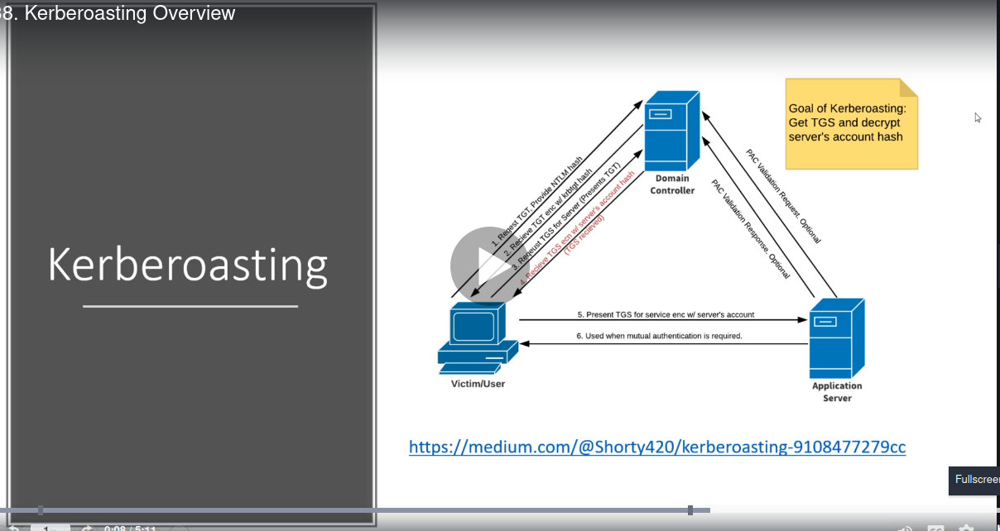

domain controller called as key distrubtion center(KTC)

tgt(ticket granting ticket)
ntlm hash is supllied by the user which is the username and password
it can be any valid user not necesarily admin hi
application server is like sql or antivirus jaisa kuch
this service has a spn which is a service prinicipal name
the server when it sends us the TGS encrypted doesnt know that whether we have access or not to the service it directly sends us once we gvive it our tgt
5,6 steps in pic arent importsant tbh
we get server's account hash too and thats a pb coz that casn be cracked na
tool used is GetUserSPNs
and would use hashcat